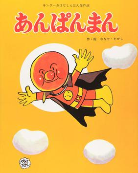

Cover of the First Book, released under the "Kinder Ohanashi Ehon Masterpiece Selection" imprint
Anpanman
Anpanman (アンパンマン) is a Japanese children's superhero picture book series written by
Takashi Yanase, running from 1973 until the author's death in 2013. The series has been adapted
into an anime entitled Soreike! Anpanman (それいけ!アンパンマン, Let's Go! Anpanman), which is one
of the most popular anime series among young children in Japan. The series follows the adventures
of Anpanman, a superhero with an anpan (a red bean paste filled pastry) for a head, who protects
the world from an evil anthropomorphic germ named Baikinman.
Heavily merchandised, the Anpanman characters appear on virtually every imaginable children's
product in Japan, ranging from clothes and video games to toys and snack foods. The series spawned a short-lived spin-off show featuring one of the popular recurring characters on the show, Omusubiman. Anpanman overtook Hello Kitty as Japan's top-grossing character in 2002, and has remained the country's top-grossing character as of 2019.Anpanman has sold over 80 million books as of February 2019, and the franchise generated ¥4.5 trillion in total retail sales revenue by 2013. Works inspired by Anpanman include the manga and anime series One-Punch Man, and the K-pop song "Anpanman" by BTS.
Development
During the Second World War, Takashi Yanase faced starvation countless times, which made him dream about eating an anpan. This inspired the creation of Anpanman.
Media
Picture books
The Anpanman picture book series debuted in October 1973.Froebel-kan has published over 150 picture books under different series labels consisting of a varying amount of picture books. Takashi Yanase wrote and illustrated the picture books until 2013, following his retirement from his career and eventual death.
Manga
Takashi Yanase created three different manga series based on the character.
January, 1975 – May, 1976: Nekketsu Märchen Kaiketsu Anpanman (熱血メルヘン 怪傑アンパンマン)
Serialized in Sanrio's monthly poetry magazine Shi to Märchen (詩とメルヘン) for which Yanase was the editor-in-chief. Unlike all other iterations, this one is aimed at adults. The entire series is included in the box-set Yanase Takashi Taizen (やなせたかし大全), published in 2013 by Froebel-kan.
September, 1976 – July, 1982: Anpanman (あんぱんまん / アンパンマン) Serialized in Sanrio's monthly youth magazine Gekkan Ichigoehon (月刊いちごえほん). The series changed its title spelling from hiragana to katakana in January 1981 and ended when the magazine folded in July, 1982. It remained commercially unavailable until 2016, when it was collected in its entirety into the volume Dare mo shiranai Anpanman (だれも知らないアンパンマン) by Fukkatsu Dotcom.
January 1, 1990 – May 29, 1994: Tobe! Anpanman (とべ!アンパンマン)
A full color comic strip serialized in the Sunday edition of Yomiuri Shinbun. In 1991 Froebel-kan published a selection of strips into three bilingual volumes, marketing them as English learning tools for children age 3+. Unlike traditional tankoubon, these volumes are presented in a vertical "Garfield Format". The rest of the series run is currently commercially unavailable.
Anime
The first anime adaptation of Anpanman, consisting of a single episode, aired during Spring Break Children's Hiroba - Picture Book on NHK General TV on March 13, 1979. Like the early picture books, Anpanman's name in the title was written in hiragana (あんぱんまん) instead of katakana. The anime was narrated by Meiko Nakamura. Although the character designs were closer to the picture books released under the Kinder Picture Books label, the story and the world view were almost the same as the second anime adaptation.
The second anime adaptation of Anpanman, entitled Soreike! Anpanman (それいけ!アンパンマン, Let's Go! Anpanman), is produced by TMS Entertainment. Over 1300 episodes have aired on NTV since October 3, 1988. In April 2020, it was reported the voice recordings have had been put on hold due to the COVID-19 pandemic. On October 2, 2020, it was announced that the voice actors will now be recording lines in separate booths in order to minimize the spread of COVID-19. They will also be taking shifts.